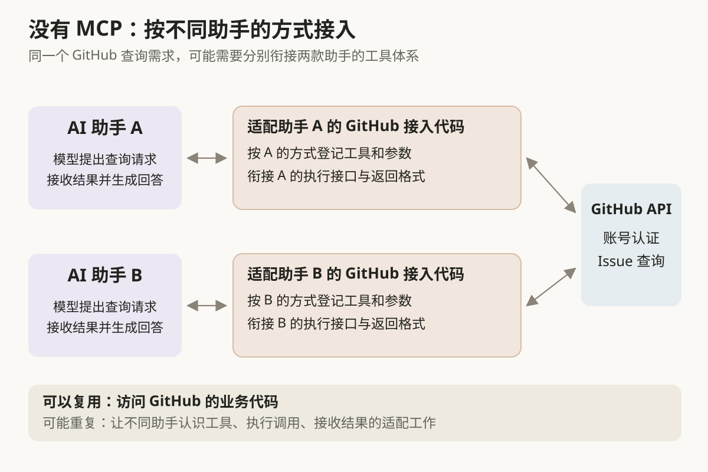
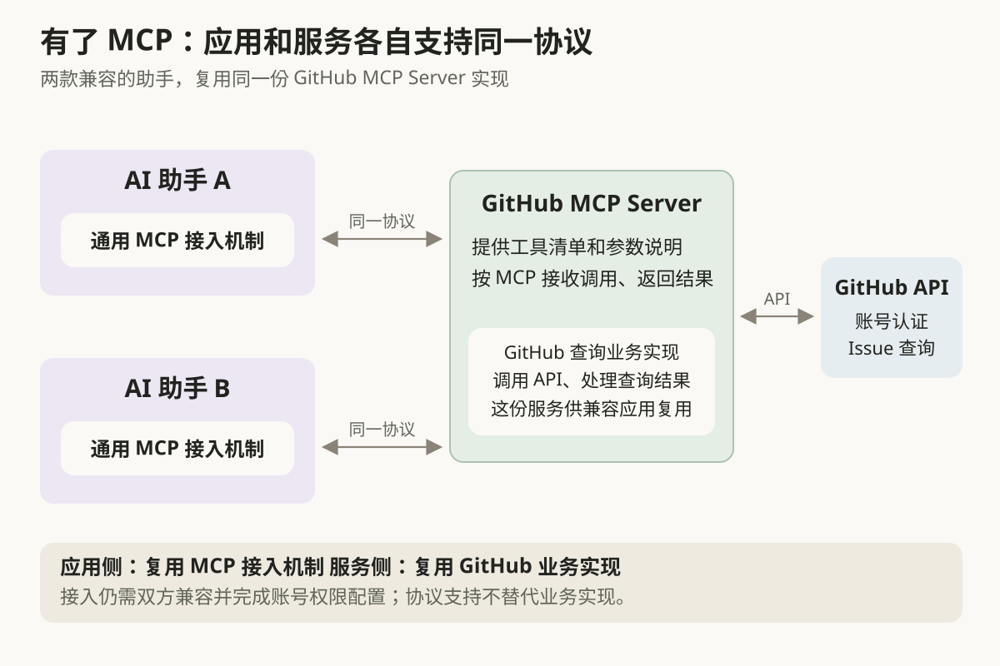
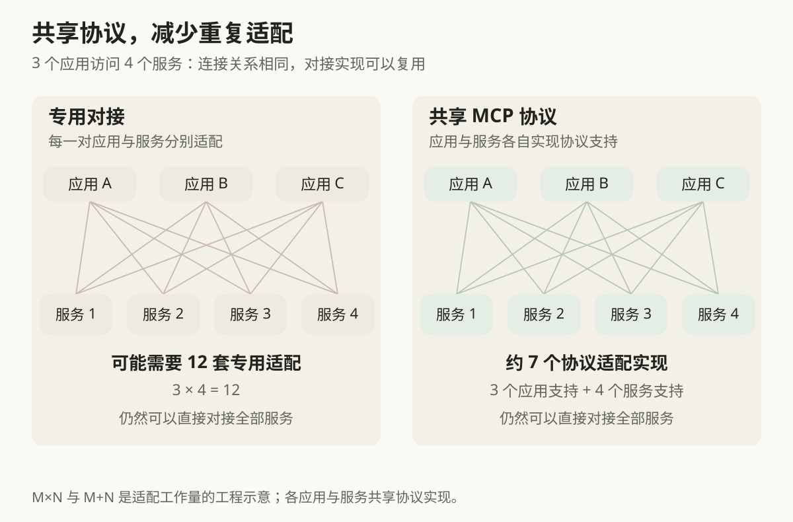
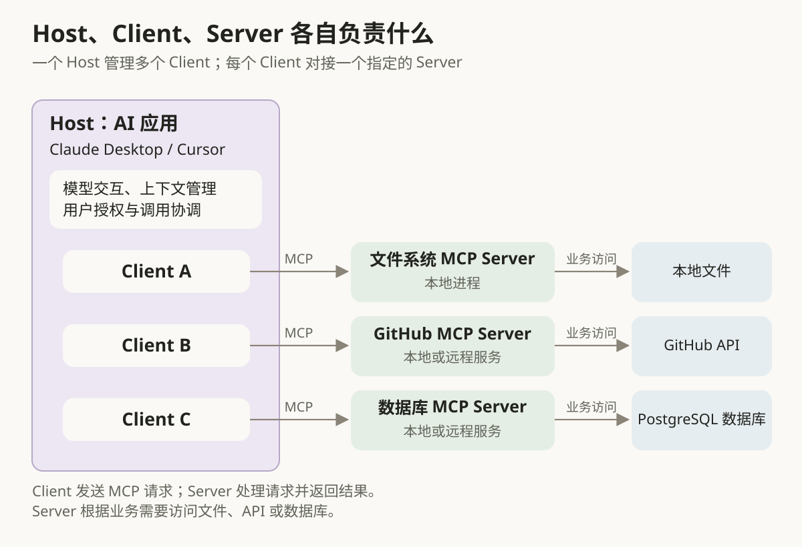
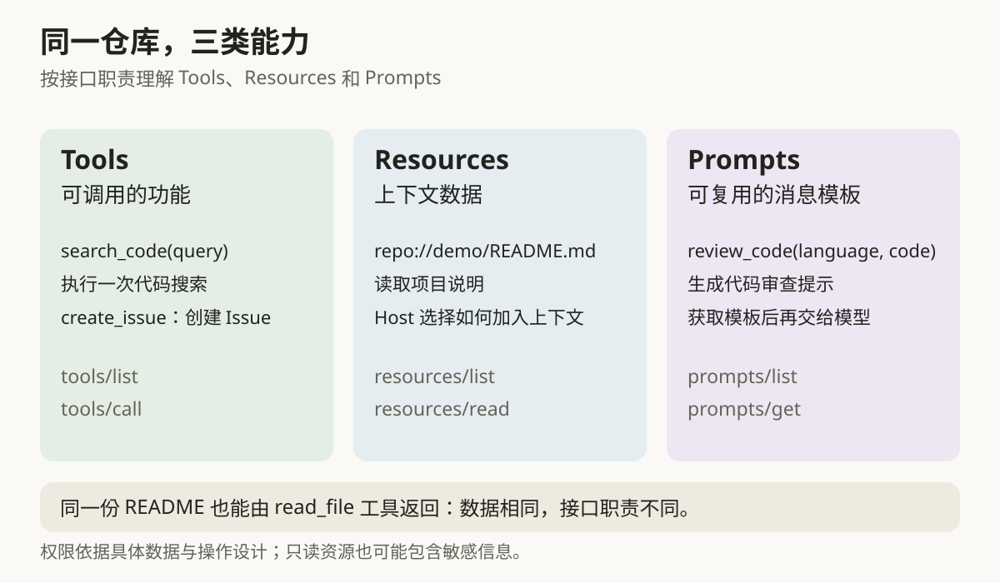
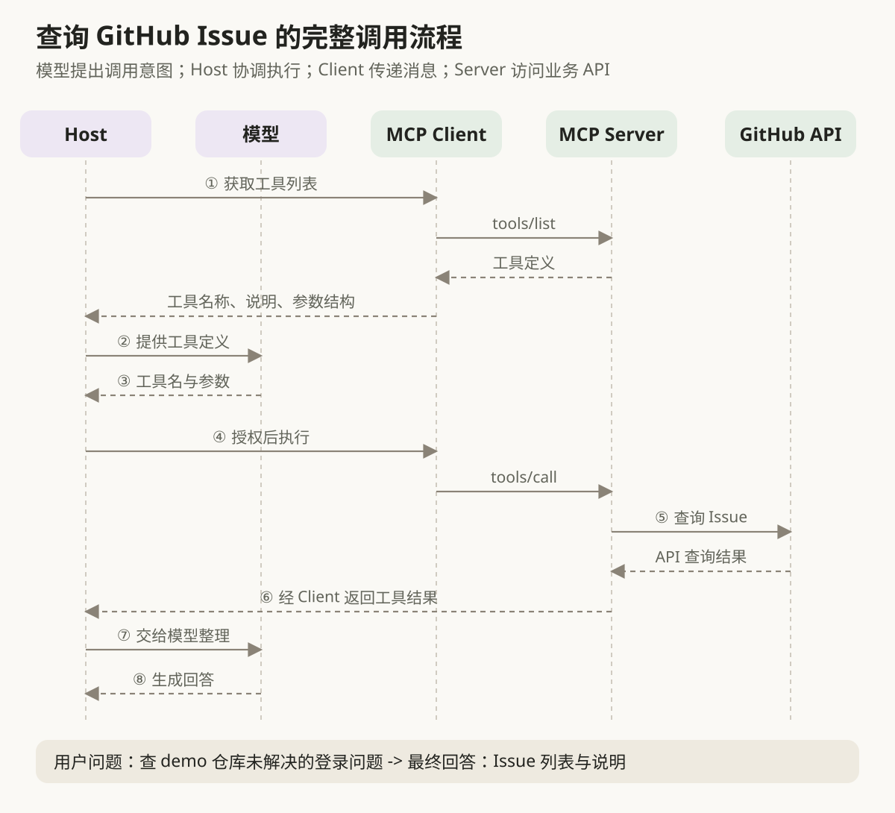
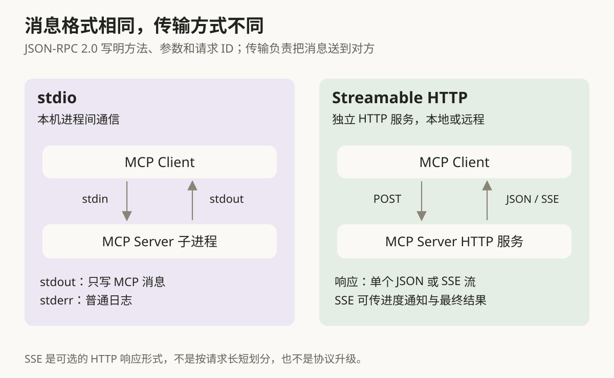

本篇目录
4. 什么是 MCP（模型上下文协议）？讲讲它的核心内容？
👔面试官：说说什么是 MCP？它解决什么问题？
🙋♂️我：MCP 就是一个工具调用框架，跟 Function Calling 差不多，让模型调用外部工具。
👔面试官：这两个处在不同层次。Function Calling 解决模型怎么表达调用请求，MCP 规范应用怎么接入工具和数据。那 MCP 里谁负责连接外部服务？
🙋♂️我：Client 就是 Claude Desktop 或 Cursor，一个 Client 可以连多个 Server。
👔面试官：Claude Desktop、Cursor 是 Host。Host 管理多个 Client，每个 Client 对接一个 Server。那 Server 提供的 Tools 和 Resources 怎么区分？
🙋♂️我：Tools 会修改数据，Resources 只读取数据，按有没有副作用区分就行。
👔面试官：搜索代码也可以是只读 Tool，不能按副作用分类。Tools 提供可调用的功能，Resources 提供上下文数据，还有 Prompts 提供提示模板。你得把这些能力放进一次完整的调用里讲清楚。
下面就从给 AI 应用接入 GitHub 这个场景出发，把这些角色和机制串起来。
💡 简要回答
我理解 MCP 是一套连接 AI 应用与外部工具、数据的开放协议。它统一了能力发现和调用方式，让兼容的 AI 应用复用同一个 MCP Server，减少重复对接。
架构里，Host 是 AI 应用，负责模型交互、上下文和权限；Client 是 Host 内部的通信组件，每个 Client 对接一个 Server；Server 提供外部能力。所以一个 Host 可以通过多个 Client 接入多个 Server。
服务端的三类主要能力是 Tools、Resources 和 Prompts，分别提供可调用的功能、上下文数据和提示模板。Tools 既可以只读，也可以写入，不能单纯按有没有副作用来区分。
一次工具调用中，模型通常通过 Function Calling 提出工具名和参数，Host 检查授权，通过 Client 请求 Server 执行，再把结果交给模型生成回答。这样就能看出 Function Calling 和 MCP 怎样配合。
底层消息使用 JSON-RPC 2.0，标准传输方式有适合本地进程通信的 stdio，以及适合独立服务部署的 Streamable HTTP。
📝 详细解析
为什么需要 MCP：把重复对接变成共享协议
假设你正在开发公司的 AI 助手 A，希望用户说一句「查一下 demo 仓库里未解决的登录问题」，助手就能去 GitHub 查询 Issue，再把结果整理成回答。
没有 MCP 时，你需要在助手里接好这条调用链。 先写调用 GitHub API 的代码，处理账号认证和查询结果；再按助手 A 的工具接入方式，登记「查询 Issue」这个工具，说明它接收仓库名、查询条件等参数。当模型提出调用请求时，你还要把工具名和参数交给对应代码执行，并把结果送回模型。
现在，另一个团队开发的 AI 助手 B 也想查询 GitHub Issue。访问 GitHub 的业务代码可以复用，但助手 B 可能使用另一套工具注册方式和执行接口。你需要把查询能力接进 B 的工具体系，让 B 知道有哪些工具、怎样调用、怎样接收结果。

接着，两个助手又都要查询数据库、读取文件、访问其他业务系统。每增加一个服务，都可能要为不同助手编写相应的接入代码。这里重复的工作，主要发生在「AI 应用怎样使用外部能力」这一层。
有了 MCP，可以把 GitHub 查询能力封装成一个遵循协议的服务，称为 GitHub MCP Server。 调用 GitHub API、处理查询等业务逻辑由这个服务负责。同时，它按 MCP 规定的方式对外提供工具清单、参数说明、调用入口和结果。
助手 A 实现 MCP 支持后，就可以向这个服务获取工具清单，拿到「查询 Issue」的说明和参数要求，再按 MCP 发送调用请求。助手 B 如果也支持兼容的 MCP 版本，就可以接入同一份服务实现，不必再为 GitHub 查询单独设计一套接入接口。

以后接入数据库或文件系统时，助手可以继续使用已有的 MCP 接入机制，对接相应的 MCP Server。应用侧复用协议接入机制，服务侧复用业务实现。 开发者因此少写了许多针对特定「应用与服务组合」的对接代码。
对照这两种方式，差别就清楚了：
| 对接工作 | 没有统一接入协议时 | 使用 MCP 时 |
|---|---|---|
| 让应用知道有哪些工具、接收什么参数 | 按各应用的工具注册方式接入 | 应用按 MCP 获取服务提供的工具清单和参数说明 |
| 发起调用、接收结果 | 为各应用衔接服务的调用接口和返回格式 | 应用和服务使用 MCP 约定的调用与结果格式 |
| 将同一服务接入另一款应用 | 业务代码可复用，应用侧可能需要额外适配 | 兼容的应用可以复用同一份 MCP Server 实现 |
GitHub API 的业务代码和账号权限仍然需要处理。使用现成 MCP Server 时，这部分业务实现可能已经由维护者提供；自己开发服务时，仍要自己实现。MCP 标准化的是应用与服务之间的交互，不会替开发者完成所有业务功能，也不保证模型每次都能选对工具。
常见的「M×N 变成 M+N」说法，就在概括这种复用：M 个应用和 N 个服务原先可能需要 M×N 套专用适配，统一协议后，双方各自实现协议支持即可复用。减少的是重复适配工作，实际连接关系仍取决于应用要访问哪些服务。

Host、Client、Server：谁决定，谁通信，谁执行
统一了接口之后，具体由谁来对接？你打开 Claude Desktop，向它提出问题，这个应用就是 Host。Host 负责与模型交互、管理上下文、选择要接入的服务，并落实用户授权和权限控制。
Host 要连接 GitHub MCP Server 时，会创建一个 Client 来负责协议通信。再接入文件系统 MCP Server，就需要另一个 Client。Client 可以理解为 Host 内部的联络员，每个联络员对接一个指定的 Server。
Server 则负责提供能力和处理请求。比如 GitHub MCP Server 可以封装搜索仓库、查询 Issue、创建 Issue 等功能；它收到请求后，再去调用 GitHub API。
因此，一个 Host 可以管理多个 Client，每个 Client 与一个 Server 建立一对一的对接关系。远程 Server 可以同时服务多个 Client，这并不矛盾，两个说法分别描述了 Client 一侧和 Server 一侧。

图中的数据库 MCP Server 是一层适配服务。Client 把查询请求交给它，它再访问 PostgreSQL 数据库并返回结果。这样就能分清「提供 MCP 接口的服务」和「实际存储数据的数据库」各自负责什么。
模型也不会直接建立这些连接。模型输出调用意图，Host 根据配置和授权决定如何执行，Client 负责传递 MCP 消息，Server 处理具体业务。
三类服务端能力：功能、上下文和提示模板
理解了角色分工，接着看 Server 能提供什么。继续用代码仓库举例，你希望 AI 查找代码、阅读项目说明，还能按团队标准做代码审查，这三个需求可以分别通过 Tools、Resources 和 Prompts 提供。
先看 Tools（工具）。Tool 是可调用的功能，比如 search_code(query) 接收关键词并搜索代码，create_issue(title, body) 接收标题和内容并创建 Issue。搜索是只读操作，创建 Issue 会改变外部状态，它们都可以是 Tool。
Server 会提供工具名称、用途说明和参数结构。Host 获取这些信息后，可以转换成模型支持的工具定义，让模型根据用户需求提出调用请求。所以 Tool 的关键是「能调用某个功能」，有没有副作用是这个功能的属性。
再看 Resources（资源）。Resource 是用 URI 标识的上下文数据。比如 Server 可以用 repo://demo/README.md 标识项目说明，通过 resources/read 返回内容，Host 再把内容放进模型上下文，让模型了解项目背景。
你可以把这个 URI 理解为资源的名字，Client 据此向 Server 请求内容。它不一定是能在浏览器里打开的下载地址，具体内容可以由 Server 从文件或数据库等系统中取出。
最后看 Prompts（提示模板）。团队可以提供 review_code(language, code) 模板，把代码审查标准和传入的代码组合成一组消息。用户选择这个模板后，Host 获取消息并交给模型，模型再按这些要求审查代码。
比如模板展开后的内容可以是：
请审查下面的 Python 代码，重点检查输入校验、异常处理和资源释放，并说明每个问题的原因。
获取 Prompt 只是拿到模板生成的消息，不会自动执行其中提到的工具操作。模板可以有参数，也可以没有参数，内容也不必局限于一段纯文本。

三者可以这样对照：
| 能力 | 主要用途 | 常见方法 | 仓库场景中的例子 |
|---|---|---|---|
| Tools | 执行可调用的功能 | tools/list、tools/call | 搜索代码、创建 Issue |
| Resources | 提供上下文数据 | resources/list、resources/read | 获取项目 README |
| Prompts | 提供可复用的消息模板 | prompts/list、prompts/get | 获取代码审查模板 |
三类能力讲清楚后，再看一个容易混淆的情况：同一份 README 既可以作为 Resource 暴露，也可以通过 read_file(path) 这样的 Tool 读取。内容相同，接口职责不同：Resource 提供上下文，Tool 执行一次调用。 判断它属于哪一类，要看 Server 用什么接口提供它。
Server 可以按需要提供一种或多种能力，Host 也需要支持相应的交互方式。比如提供了 Prompt 模板的 Server，接入后能否让用户选择模板，还取决于 Host 是否实现了这个功能。
官方设计中，Tools 通常由模型根据任务选择，Resources 由应用决定如何加入上下文，Prompts 由用户主动选择使用。不过，这些是常见交互方式，应用可以按需要设计界面，并非协议强制规定的唯一流程。
一次工具调用，怎样从用户问题走到最终回答
现在把角色和能力放进一次实际调用。假设用户提出：「帮我查一下 demo 仓库里还没解决的登录问题。」下面的工具名 search_issues 是教学示意，实际名称和参数以 Server 返回的工具列表为准。
在处理问题之前，Host 通过 GitHub MCP Client 获取 Server 的工具列表。tools/list 返回工具名称、说明以及 inputSchema。这个 schema 描述参数结构，比如仓库名是字符串、查询条件是字符串，哪些参数必须提供。
Host 再把这些工具定义转换成模型支持的格式。模型根据用户问题判断需要搜索 Issue，于是输出工具调用请求，包含工具名和查询参数。模型提出请求，执行请求的是应用和 Server。
Host 检查工具是否可用、用户授权是否满足要求，再通过对应的 Client 发送 tools/call。Server 收到消息后调用 GitHub API，把查到的 Issue 返回给 Client。
最后，Host 把工具结果交给模型，模型根据结果整理出回答。如果结果不够，模型还可能提出下一次工具调用。这就是常见的工具调用循环。

这样，Function Calling 和 MCP 的分工就清楚了：Function Calling 帮助模型用结构化格式表达调用意图；MCP 规范了 Host 通过 Client 与 Server 发现和调用工具的过程。Host 需要把两边的格式衔接起来，MCP 本身不规定模型如何推理，也不保证模型每次都能选对工具。
从这个流程可以看出，工具发现、模型选择和实际执行是三个环节。Host 先了解 Server 提供什么，再根据任务和授权组织调用。
JSON-RPC 2.0：先看消息里写了什么
Client 知道要调用哪个工具之后，还需要用双方约定的格式发送消息。MCP 使用 JSON-RPC 2.0，主要有请求、响应和通知三类消息。
请求说明要执行哪个协议方法、带哪些参数，并包含 id。响应使用相同的 id，这样 Client 就能把结果与原来的请求对应起来。通知没有 id，不需要对方返回 JSON-RPC 响应，比如工具列表发生变化时，Server 可以通知已订阅的 Client 更新列表。
这里要区分两个名称：tools/call 是 MCP 协议方法，search_issues 是被调用的具体工具。可以把前者理解为「调用工具」这个动作，后者是「调用哪一个工具」。
先看这次查询的核心结构。下面省略协议元数据，只展示调用工具需要表达的信息，不是可直接发送的完整请求。为了说明字段用途，使用 JSONC 加上注释，实际传输时要使用不含注释的 JSON。
{
"jsonrpc": "2.0",
"id": 7, // 本次请求的标识
"method": "tools/call", // MCP 协议方法
"params": {
"name": "search_issues", // Server 提供的工具名，示意名称
"arguments": { // 工具接收的业务参数
"repository": "demo",
"query": "is:open login"
}
}
}Server 成功执行后，返回结果的核心结构如下，同样省略协议元数据。其中 resultType: "complete" 表示操作完成，content 存放返回内容。
{
"jsonrpc": "2.0",
"id": 7, // 与请求的 id 对应
"result": {
"resultType": "complete", // 本次操作已完成
"content": [
{
"type": "text",
"text": "找到 2 条尚未关闭的登录相关 Issue。"
}
],
"isError": false // 工具执行成功
}
}失败也要分层理解。如果协议方法不存在或请求格式不合法，Server 返回 JSON-RPC error；如果请求符合协议，但业务执行失败，比如 GitHub API 暂时不可用，工具可以在 result 中用 isError: true 返回失败信息。Host 需要把失败原因交给模型或用户处理，不能把失败结果当成成功数据。
stdio 和 Streamable HTTP：再看消息怎样传过去
JSON-RPC 规定消息怎么写，传输方式规定消息怎么传。MCP 定义了 stdio 和 Streamable HTTP 两种标准传输方式，也允许实现自定义传输。
stdio（标准输入输出） 适合在本机启动的 MCP Server。Client 启动 Server 子进程，通过它的 stdin 发送消息，从 stdout 读取消息。例如本地文件系统 MCP Server，可以用这种方式接入。
这里的 stdout 要留给 MCP 消息，普通日志应该写到 stderr。否则 Client 读到日志文本，可能会把它误当成协议消息。stdio 这段进程通信不需要网络，但 Server 执行业务时仍可能访问 GitHub 等远程服务。
Streamable HTTP 则让 Server 作为独立 HTTP 服务运行，Client 向 MCP 端点发送 POST 请求。它适合远程部署、多个 Client 共用服务，也可以部署在本机。
Server 可以返回单个 JSON 响应，也可以返回 SSE 响应流。普通 JSON 响应一次返回结果；SSE（Server-Sent Events）允许 Server 在同一次 HTTP 响应中陆续发送多条消息，比如先发送进度通知，最后再发送结果。
SSE 使用 Content-Type: text/event-stream 表明响应类型。是否使用 SSE 由实现选择，一个请求用 JSON 返回就能完成时，不必使用 SSE。MCP 端点也不要求固定命名为 /mcp，这只是常见示例路径。

协议版本：为什么有的教程先初始化，有的可以直接发请求
MCP 由 Anthropic 在 2024 年 11 月发布，之后持续演进。前面已经讲了工具怎样调用、消息怎样传输。接入具体服务时，还需要解决一个问题：双方是否使用兼容的协议版本，能支持哪些交互？
比如，Server 可以提供工具、资源或提示模板，Client 也可能支持让 Server 请求用户补充信息。这些「支持哪些交互」的信息，就是协议里的能力信息。它说明双方能做哪类事情，具体有哪些工具、各工具接收什么参数，还要另外查询。
旧版通过初始化握手交换这些信息。Client 先发送 initialize，Server 返回协议版本和能力，Client 再发送 notifications/initialized，表示可以开始正常交互。可以理解为正式办事前，双方先介绍自己的版本和功能。
到了 2026-07-28，Client 把版本和客户端能力放进每个请求的 _meta，Server 就能根据这条请求携带的信息处理它，不再依赖之前的初始化握手。前面查询 Issue 的请求省略了这一部分，现在可以把下面的片段补进它的 params 中：
{
"_meta": {
"io.modelcontextprotocol/protocolVersion": "2026-07-28", // 使用的协议版本
"io.modelcontextprotocol/clientInfo": { // Client 的实现信息
"name": "example-client",
"version": "1.0.0"
},
"io.modelcontextprotocol/clientCapabilities": {} // 本例未声明额外客户端能力
}
}这样看就能区分两组信息：arguments 描述这次搜索哪个仓库、使用什么查询条件；_meta 描述这次请求使用哪个协议版本、Client 支持哪些交互能力。这里的客户端能力也不是工具清单，工具清单由 Server 通过 tools/list 提供。
Client 如果想事先了解 Server，还可以调用 server/discover，获取它支持的版本、能力和身份信息。Server 必须实现这个方法，Client 可以选择先调用，也可以直接发送带元数据的业务请求，根据返回的版本错误调整。发现 Server 支持工具调用之后，再用 tools/list 获取具体工具，两个步骤关注的内容不同。
另一个容易遇到的概念是会话。旧版 Streamable HTTP 允许 Server 创建会话 ID，Client 在后续请求中携带它，让 Server 识别这些请求属于同一组交互。2026-07-28 移除了这种协议级会话，每个请求需要带上处理它所需的信息。
这就是新版的「无状态」：请求处理不依赖连接上先前建立的隐式会话。不过，业务仍然可以有持续状态。比如一个长任务可以有任务标识，Client 在后续查询中明确携带这个标识，Server 据此找到任务。
通知的接收方式也有变化。旧版 HTTP 允许 Client 单独发送 GET 请求，打开 SSE 流来接收 Server 消息；2026-07-28 移除了这个入口。需要接收工具列表变化等通知时，Client 可以发送 subscriptions/listen 请求，在其 SSE 响应流中接收已订阅的变化通知。
理解这些机制后，再按版本对照就容易了：
| 协议版本 | 主要特点 |
|---|---|
| 2024-11-05 | 早期 HTTP+SSE 使用分开的 SSE 和 POST 端点，后来被弃用 |
| 2025-03-26 至 2025-11-25 | 使用单 MCP 端点的 Streamable HTTP；保留初始化握手，允许 HTTP 协议级会话和独立 GET SSE 流 |
| 2026-07-28 | 每个请求携带版本与客户端能力；移除上述握手和 HTTP 会话；变化通知通过 subscriptions/listen 获取 |
版本差异还包括协议允许使用哪些消息形式。比如 JSON-RPC 2.0 定义了批量请求，但 MCP 在 2025-06-18 移除了对它的支持。判断某个功能能不能使用，要看对应的 MCP 规范，不能只看底层消息格式。
实际产品和 SDK 的支持进度可能不同，接入时要查看双方支持的版本。旧版初始化流程仍然有助于理解现有实现；早期双端点 HTTP+SSE 作为兼容背景了解即可，新实现应优先采用 Streamable HTTP。
接通之后，还要处理权限和上下文
双方协议兼容、消息能够收发之后，Host 还要决定哪些能力允许使用、用户授权了哪些操作，以及哪些数据可以传给模型。
例如，搜索公开 Issue 和创建 Issue 的影响不同；读取公开 README 和读取包含凭据的配置文件，数据敏感性也不同。授权应该围绕具体操作和具体数据设计，不能简单规定 Tools 都高风险、Resources 都可自由开放。用户应当能够了解和控制工具使用，敏感操作需要相应的确认机制。
Server 返回的文档、工具说明和提示模板，也可能包含不可信内容。Host 不能因为一段文字来自 MCP Server，就把它当成高优先级指令照办，否则外部内容可能借机诱导应用泄露数据或调用其他工具。
另外，支持 MCP 不代表支持全部服务端能力。某个 Host 可能只提供工具调用界面，另一款应用可能还提供资源选择和 Prompt 菜单。接入前要确认双方实现支持哪些功能，而不是只检查配置里有没有 Server 地址。
当工具和资源很多时，Host 还需要控制上下文开销，按任务选择工具定义和资源内容。MCP 统一了获取这些能力的接口，应用仍要负责如何使用它们。
🎯 面试总结
回答这道题，可以先从重复集成的问题说起：MCP 用开放协议统一 AI 应用与工具、数据服务之间的交互，让兼容的应用复用 Server 实现，减少重复适配。
然后讲清角色分工。Host 管理模型交互、上下文和权限；Client 是 Host 内部的通信组件，每个 Client 对接一个 Server；Server 提供并执行相应能力。
服务端三类主要能力是 Tools、Resources 和 Prompts。Tools 提供可调用的功能，既可以只读也可以写入；Resources 提供上下文数据；Prompts 提供可复用的消息模板。它们的区别在接口职责，风险则取决于具体操作和数据。
接着用一次完整调用说明原理：Host 获取工具定义，模型输出调用请求，Host 检查授权，通过 Client 请求 Server 执行，再把结果交给模型。Function Calling 和 MCP 分别负责这条链路中的不同环节。
最后补上消息与传输：JSON-RPC 2.0 定义消息格式，stdio 和 Streamable HTTP 是两种标准传输方式。讨论初始化、会话或通知时，需要说清协议版本。能把这些机制串进一个真实场景，比只背概念更能体现理解。
参考链接
对了，大模型面试题会在「公众号@小林面试笔记题」持续更新，林友们赶紧关注起来，别错过最新干货哦！